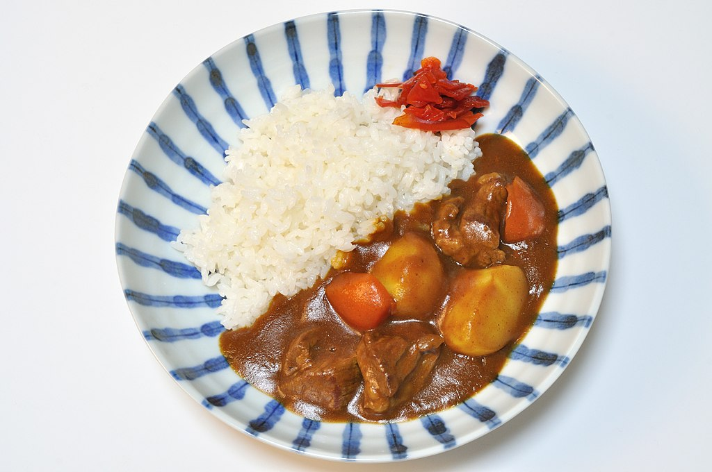

Curry

Found this on wikipedia
Ingredients
- Flour
- Cooking oil
- Chicken Stock
- Onions
- Carrots
- Garlic
- Carrots
- Potatoes
- Pork Shoulder
- Salt and pepper
- Fish Sauce
- Coconut Milk
- White Rice
Directions
- Cut pork into 1 inch cubes and season with salt and pepper. Brown in saute pan and remove
- Combine equal parts flour and cooking oil to pan and stir to create a roux
- Add sliced onions, carrots,potatoes, and garlic to roux. Saute until aromatic
- Add chicken stock to pan. Make sure to add in slowly to prevent lumps
- Add pork back into pan then allow to simmer, anywhere from 2-4 hours
- Add additional ingredients as wanted, such as fish sauce and coconut milk
- Serve with rice. Enjoy :)